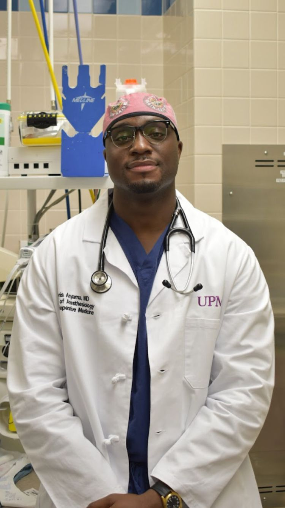

Medical education
Teaching across undergraduate, graduate, and professional healthcare audiences.
Medicine · Education · Leadership
Boris Anyama, MD is a dual board-certified anesthesiologist and interventional pain physician, Assistant Professor at the University of Pittsburgh School of Medicine, and former Atlanta Falcons linebacker.

01 / A career across disciplines
Medicine was not the first high-performance environment Boris entered.
Before becoming a physician, he played Division I football at the University of Louisiana and signed with the Atlanta Falcons in 2015. He later entered medicine, drawn to anesthesiology by an interest in physiology, pharmacology, and the collaborative environment of the operating room.
Today, he works across anesthesiology and interventional pain medicine while teaching the next generation of healthcare professionals.

The common thread
Use what you have learned to help the people around you move forward.
02 / Clinical work
 Clinical practice
Clinical practicePain medicine is where physiology, function, and quality of life intersect.
Boris practices anesthesiology and interventional pain medicine within the UPMC system and serves as an Assistant Professor at the University of Pittsburgh School of Medicine.
This is a professional profile and is not a substitute for clinical or appointment information. For appointments and medical questions, use the appropriate UPMC channel.
03 / Teaching
Teaching across the healthcare continuum.
Boris works with medical students, SRNAs, Stat MedEvac personnel, residents, and fellows. His approach is grounded in practical questions: How do you prepare? How do you perform when the situation changes? How do you become useful to the people around you?
Teaching across undergraduate, graduate, and professional healthcare audiences.
Helping students and trainees navigate difficult transitions and build durable professional habits.
Turning high-stakes experience into practical preparation, clear communication, and dependable teamwork.
04 / Speaking
Performance, medicine, identity, and professional transition.
Boris has presented at the Student National Medical Association’s Annual Medical Education Conference, speaking to pre-medical students, physicians, alumni, and healthcare professionals. His 2026 sessions focused on the transition from football to medicine and navigating the Medical Match.


Selected topics
05 / Community
Medicine is only one part of Boris’s professional life.
Leadership and community programming with former players, including service as president of the NFL Players Association’s Pittsburgh Former Players Chapter.
Coordinating UPMC anesthesiology volunteers for the Best of the Batch Foundation’s Batch-A-Toys program.
Serving on the Society for Ambulatory Anesthesia’s Office-Based Anesthesia Committee.
Show up. Be prepared. Make yourself useful. Leave something better than you found it.
06 / Scholarship
Regional Anesthesia and Pain Medicine · 2025
A peer-reviewed letter examining the emergence of medetomidine in the illicit drug supply and its implications for perioperative medicine, pain, and public health.
Google Scholar profile07 / Connect
For speaking invitations, educational programs, mentorship initiatives, community partnerships, media inquiries, or professional collaboration, use the appropriate professional profile below.